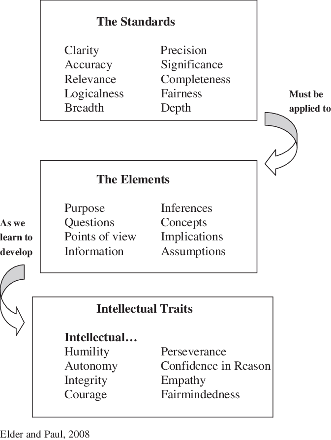
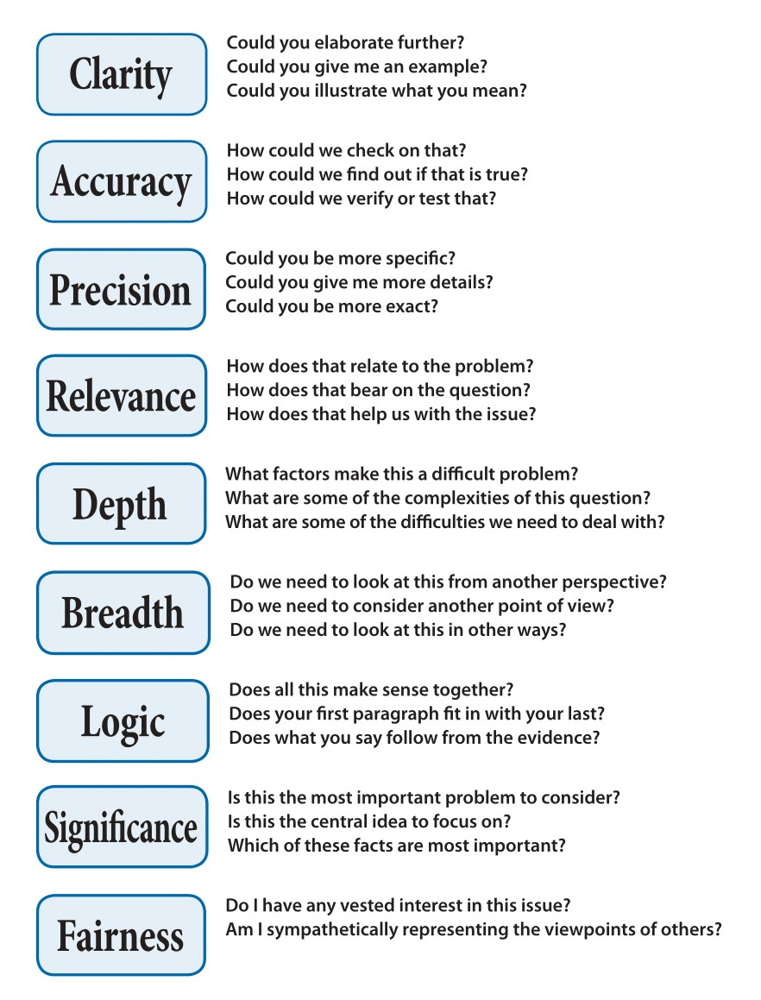
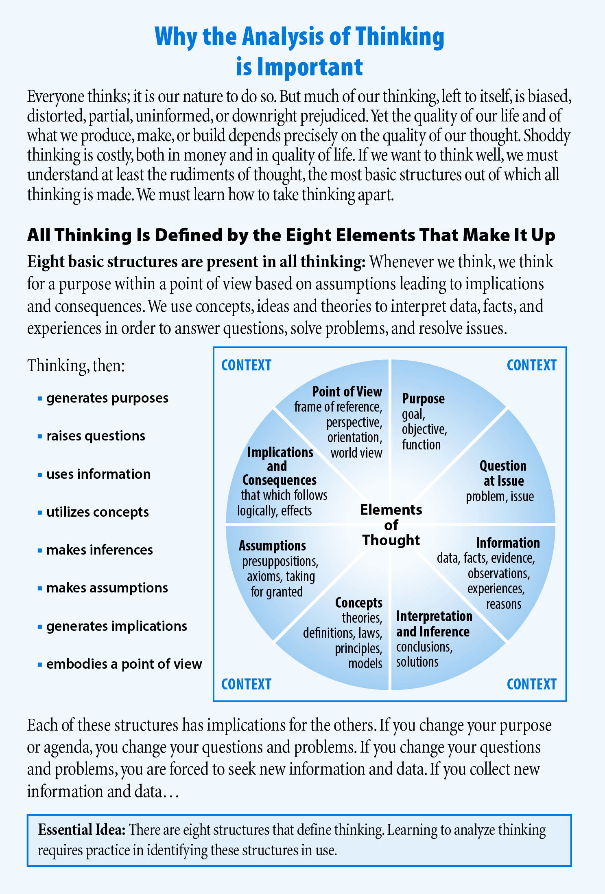
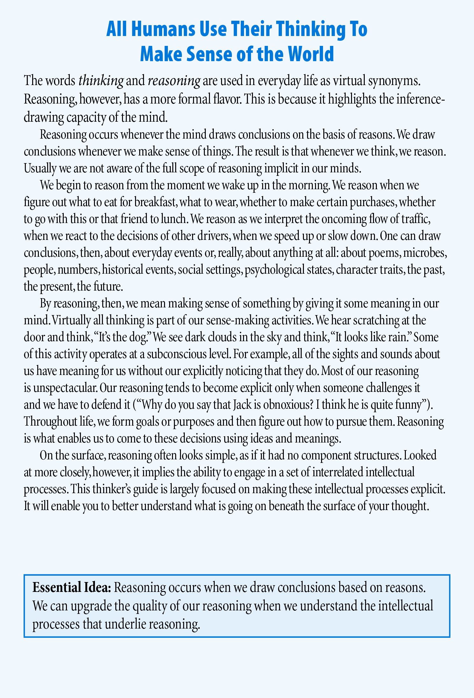
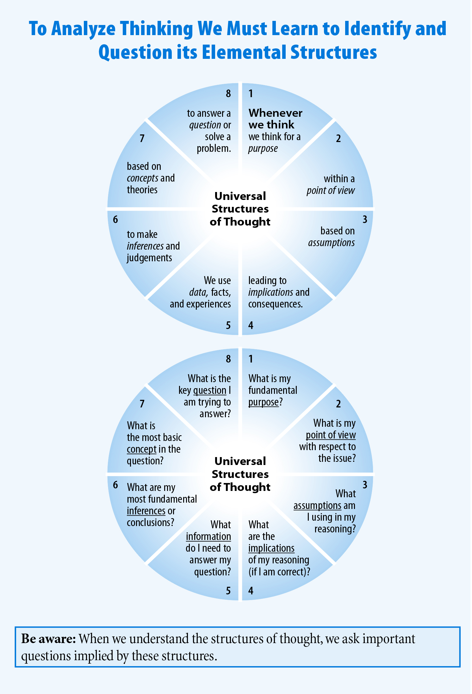
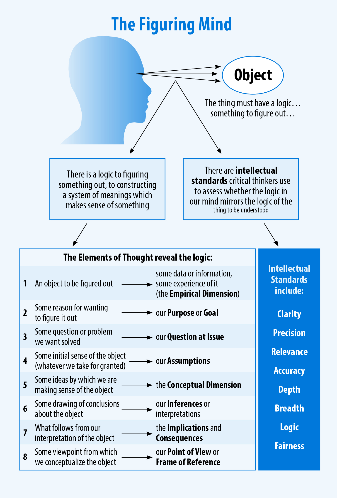
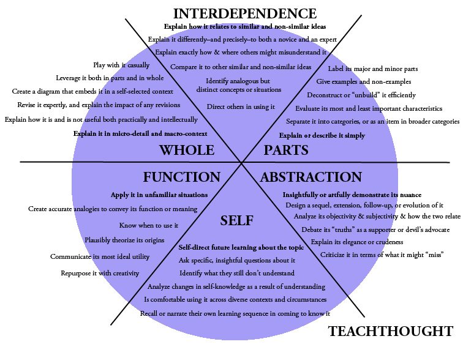
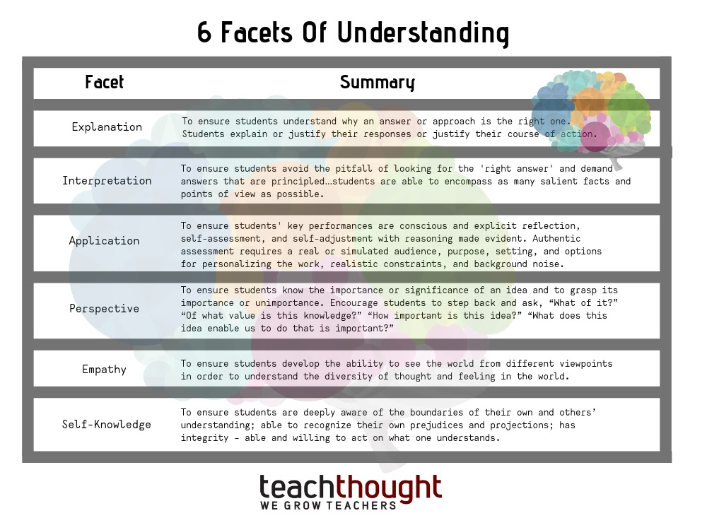
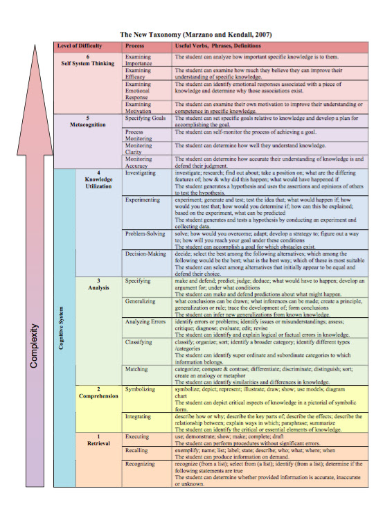

Critical Questions and Critical Thinking
What are the attributes and practices of a critical thinker? How does one orient the mind toward criticality, and how does that differ from other modes of thought? A useful answer is deceptively simple: critical thinkers learn to ask the right questions at the right time. The challenge is determining what makes a question “right,” what makes its timing appropriate, and how much scrutiny a particular context actually requires.
Critical Thinking Begins with Better Questions
The first task is not merely to ask more questions, but to identify which questions are relevant, fundamental, and timely.What does it mean to ask the “right” question rather than a “wrong” one? A question can miss the mark in several ways: it may be irrelevant, underspecified, overly generic, non-fundamental, or premature. Sometimes the problem is not that a question is false or nonsensical, but that it fails to produce the preliminary information needed for the next stage of reasoning.
Timing matters as well. There are questions whose value depends on when they are asked. A window of opportunity can pass before we recognize the consequences of having failed to ask something crucial. In that sense, critical thinking requires judgment not only about what to ask, but also about when a question becomes decision-relevant.
What “Critical” Thinking Actually Means
Before discussing technique, it helps to clarify the concept itself and distinguish criticality from hostility or mere criticism.Critical thinking, as defined in Wikipedia, refers to:
the analysis of available facts, evidence, observations, and arguments to form a judgment.[1] The subject is complex; several different definitions exist, which generally include the rational, skeptical, and unbiased analysis or evaluation of factual evidence. Critical thinking is self-directed, self-disciplined, self-monitored, and self-corrective thinking.[2] It presupposes assent to rigorous standards of excellence and mindful command of their use. It entails effective communication and problem-solving abilities as well as a commitment to overcome native egocentrism[3][4] and sociocentrism.
I think this is a fair definition of what the concept invokes. A critical thinker synthesizes and analyzes information while applying rigorous intellectual standards to the process. Critical thinking is reflective and skeptical without being reflexively cynical; it uses reason and evidence, evaluates claims and interpretations, remains open-minded, asks questions, and stays committed to truth.
What “critical” does not mean
The word critical can be misleading. Some hear it as adversity or “criticism”; others associate it with unjust judgment. Still others think immediately of Critical Theory, a political and philosophical tradition concerned in part with power structures. That is not the sense of critical I am using here.
Here, criticality refers to rigor, doubt, clarity, rational and empirical inquiry, self-reflection, the probing of assumptions, and the evaluation of inferences and interpretations. Critical thinking can certainly be directed toward political ends, but it is not inherently activist in the way Critical Theory may be. Nor does it imply attack. One of the key skills of a critical thinker is distinguishing an attack on identity from an evaluation of the content of an argument or observation.
In fact, making these distinctions is itself a feature of critical thinking. Clarifying terminology is not a side issue; it is one of the ways we prevent ambiguity from contaminating later reasoning.
Critical Thinking Is Context-Sensitive
Standards such as precision, depth, accuracy, and purpose matter—but they do not always matter to the same degree.A resource I like is the Foundation for Critical Thinking. Its guidelines present basic forms of questioning and intellectual standards that can be applied to the critical-thinking process. These standards are simple enough to remember, but they also reveal something important: critical thinking has a time, a place, and an appropriate level of intensity.
Consider precision. Would it be reasonable to demand the same kind of precision when interpreting a poem in English class that you would demand when specifying an engineering tolerance? Does depth matter equally when giving your boss a concise briefing on the prior day? Purpose may be crucial to understanding the poem, while excessive detail may make the briefing worse. Even accuracy has practical thresholds: the level of accuracy required for casual orientation is not necessarily the level required for a medical dosage, financial calculation, or safety-critical decision.
Reference graphics on intellectual standards and questioning
The following reference graphics belong together conceptually: they illustrate standards and questioning practices that can be internalized and applied according to context.






What Makes a Question a Good Question?
Good questions expose the structure of a problem: its terms, evidence, assumptions, inferences, alternatives, relevance, and purpose.There are many attributes of a successful critical thinker. Being able to identify a problem is crucial, but so is gathering the proper supporting information. We must be able to probe unstated assumptions, clarify terminology, and draw inferences according to the laws of logic rather than by fallacious shortcuts. These abilities are easier to remember when they are organized around the kinds of questions we ask.
| Object of scrutiny | Typical question | Why it matters |
|---|---|---|
| Terminology | What exactly do we mean by this? | Ambiguous terms can make an argument appear clearer than it is. |
| Problem definition | Why should this be considered a problem? | A badly framed problem can send the entire inquiry in the wrong direction. |
| Evidence | What supports this claim? | Claims differ in credibility depending on the quality and relevance of their support. |
| Assumptions | What else must be true for this reasoning to work? | Important premises often remain implicit. |
| Inference | Does this conclusion actually follow? | Evidence can be real while the inference drawn from it is still invalid or weak. |
| Alternatives | What else could explain this? | Competing explanations help test whether the preferred interpretation is premature. |
| Relevance | Does this matter to the issue at hand? | A true or interesting fact can still be irrelevant. |
| Context | How much precision or depth is required here? | The appropriate standard depends partly on purpose and stakes. |
| Metacognition | Was my question itself well formed? | Critical thinking also evaluates the quality of its own inquiry. |
This last category is especially important. A question can itself become the object of another question: was that a sufficient answer to my original question? Did I ask at the right level? Am I pursuing a fundamental issue or merely circling around its surface? Critical thinkers do not only examine answers; they also examine the quality of the questions generating those answers.
Socratic Questioning: The Core Practice
Socratic questioning connects problem definition, evidence, assumptions, and inference into a practical method of inquiry.At the core of this approach is Socratic Questioning, a method of inquiry associated with Socrates. Suppose someone identifies a problem. A critical thinker may begin by asking why the topic should be conceived of as a problem at all, what the word problem means in this context, and what conditions would have to be present before that classification is justified.
If we agree that there is a problem, someone may then present information intended to demonstrate it. A Socratic question can ask why that information supports the classification, whether the information is valid, what alternative interpretations are possible, or what unstated assumption connects the evidence to the conclusion. Much reasoning depends on propositions that remain implicit. One useful question is therefore: What other proposition has to be true in order for this to be plausible?
This is not merely a tool for “winning a debate.” Socratic questioning is useful for problem solving, group decision making, conflict resolution, and even designing software. In each case the function is diagnostic: we are trying to locate uncertainty, expose hidden dependencies, improve a shared model of the problem, and identify which question should come next.
The Disposition of a Critical Thinker
Technique is not enough. Critical thinking also requires habits that make self-correction possible.This is already a lot to take in, and some of it may even seem obvious. But the practical question is whether we actually apply these standards in our lives. Do we use them consistently, or only when they benefit us? Do we abandon them when scrutiny becomes inconvenient?
One major impediment to critical thinking is egocentrism. One way of counteracting it is to cultivate empathy and apply the Principle of Charity: interpret another person’s position in its strongest reasonable form before criticizing it. This does not require agreement. It requires separating the evaluation of a claim from an attack on the identity of the person making it.
A critical thinker must also be willing to revise beliefs in light of new evidence. Questioning without the possibility of revision can become performance rather than inquiry. A more complete cycle is: ask, investigate, infer, judge provisionally, and update when better reasons become available.
Frameworks for Asking Better Questions
Many formal methods can be understood as specialized systems for directing questions toward different kinds of problems.Several well-known techniques formalize patterns of questioning. The Eight Disciplines Problem Solving method developed at Ford structures problem solving; the Five Whys, associated with Toyota, pushes inquiry toward root causes; and SWOT analysis organizes strategic questions around strengths, weaknesses, opportunities, and threats. Fundamental to each is the disciplined selection and sequencing of questions.
The same general principle appears outside industrial problem solving. Cognitive Behavioral Therapy often asks people to examine the evidence for thoughts, identify assumptions, consider alternative interpretations, and test whether a conclusion is warranted. The domain changes, but the underlying practice of directed questioning remains recognizable.
| Framework | Primary purpose | Connection to critical questioning |
|---|---|---|
| Eight Disciplines (8D) | Structured problem solving | Organizes questions about the problem, causes, remedies, implementation, and verification. |
| Five Whys | Root-cause analysis | Pushes beyond the first explanation toward more fundamental causes. |
| SWOT | Strategic analysis | Forces examination from multiple internal and external perspectives. |
| Cognitive Behavioral Therapy | Examining patterns of thought and behavior | Tests evidence, assumptions, interpretations, and alternative explanations. |
| Bloom’s Taxonomy | Levels of cognitive activity | Shows that questions can operate at different levels of complexity and abstraction. |
| TeachThought Learning Taxonomy | Questioning and learning design | Provides additional ways to move from surface questions toward deeper inquiry. |
| UbD’s Six Facets of Understanding | Assessing and developing understanding | Broadens inquiry across explanation, interpretation, application, perspective, empathy, and self-knowledge. |
| Marzano & Kendall Taxonomy | Cognitive and metacognitive organization | Highlights different levels and systems of thought, including questions about one’s own reasoning. |
Bloom’s Taxonomy and higher-order questions
There can be levels of questioning, as illustrated by Bloom’s Taxonomy. The point is not that one level is always superior, but that different questions perform different cognitive tasks. Sometimes we need recall; sometimes we need interpretation, analysis, synthesis, evaluation, or questions about the quality of the inquiry itself.

The larger idea is that higher-order questions are possible. We can ask questions about the quality of our questions, move toward more general underlying concepts, and deliberately change the level at which we are reasoning. Several other frameworks attempt to organize this process.
The TeachThought Learning Taxonomy

UbD’s Six Facets of Understanding

Marzano & Kendall Taxonomy
Another related framework is the Marzano & Kendall Taxonomy.

Knowing When to Stop Questioning
Critical thinking is not an infinite regress of “why?” It includes judgment about relevance, sufficiency, and diminishing returns.One thing I am not advocating is an infinite regress of “why” questioning. Questions should be directed and goal-oriented. Some contexts can tempt us into endless regress, but part of critical thinking is recognizing when another layer of questioning is illuminating and when it is merely postponing judgment.
Every additional question also has an opportunity cost: it consumes time and attention. In many practical situations, the best next question is not the deepest imaginable question but the most decision-relevant one. The standard is therefore not “ask indefinitely.” It is “ask until the inquiry is sufficiently clear, supported, and appropriate to the stakes.”
Are there stupid questions?
Some people say that “there are no stupid questions.” I disagree, at least if the claim is treated as a universal rule rather than an encouraging classroom aphorism. Suppose that during a physics lecture the professor asks for questions and a student raises a hand to ask, “What color is your pencil?” My preliminary judgment is that the question is irrelevant to the lecture.
However, fuller context could change that judgment. Perhaps the pencil’s color is relevant to an experiment, a visual demonstration, or some fact not yet disclosed. Limited information can make a question appear irrelevant when it is not. That is precisely why the conclusion should remain revisable in light of new evidence.
This example brings us back to the central point: a question is not good merely because it is a question. Its quality depends on relevance, purpose, context, and what the answer would contribute to the inquiry. The maxim “there are no stupid questions” may therefore be useful pedagogically while still being questionable as a literal generalization. How would one nullify a general rule of thumb like that anyway? By asking what it means, what exceptions it permits, and what evidence would count against it.
From Questioning to Argument Evaluation
The questioning frame of mind leads naturally into argument analysis: identifying patterns, testing inferences, and recognizing bad reasoning even before we know its formal name.I began by saying that critical thinking implies asking questions, and I have given a great deal of material here to dwell on. The goal is to cultivate a questioning frame of mind. It is not always obvious what the right question should be, or which question is the most fundamental, but a process of question and response—within both internal and external dialogue—can sharpen the skill over time.
There are more advanced techniques for evaluating arguments and evidence. In the next blog post I want to cover fundamentals from argumentation theory for identifying common argument patterns. Many critical-thinking classes ask students to memorize lists of fallacies or biases. I want to avoid making memorization the center of the method. Ideally, you should be able to recognize illegitimate reasoning even if you do not know the formal name of the fallacy or bias. You may even be able to identify a recurring bad pattern and only later discover that it has already been catalogued.
A simple example: ratings and the Fallacy of Division
Suppose I argue that Home Town Buffet is horrible because the chain has a generally low rating, and therefore the particular location around the corner must be horrible too. This could instantiate a form of illicit transference known as the Fallacy of Division. Even if you had never heard that label, you should be able to reason toward the problem: a property attributed to a whole does not automatically transfer to each particular part.
A questioning approach exposes the weakness quickly. What exactly was rated—the chain, a sample of locations, or this location? How was the rating produced? How representative is it? What do we mean by “horrible”? Those questions are more important than remembering the fallacy’s name because they reveal why the inference may fail.
Closing idea
Critical thinking is best understood as a disciplined practice rather than a vocabulary test. We clarify terms, identify problems, examine evidence, expose assumptions, test inferences, consider alternatives, calibrate the depth of inquiry to the context, and remain willing to revise our conclusions. The recurring skill underneath all of these activities is learning to ask the next useful question.